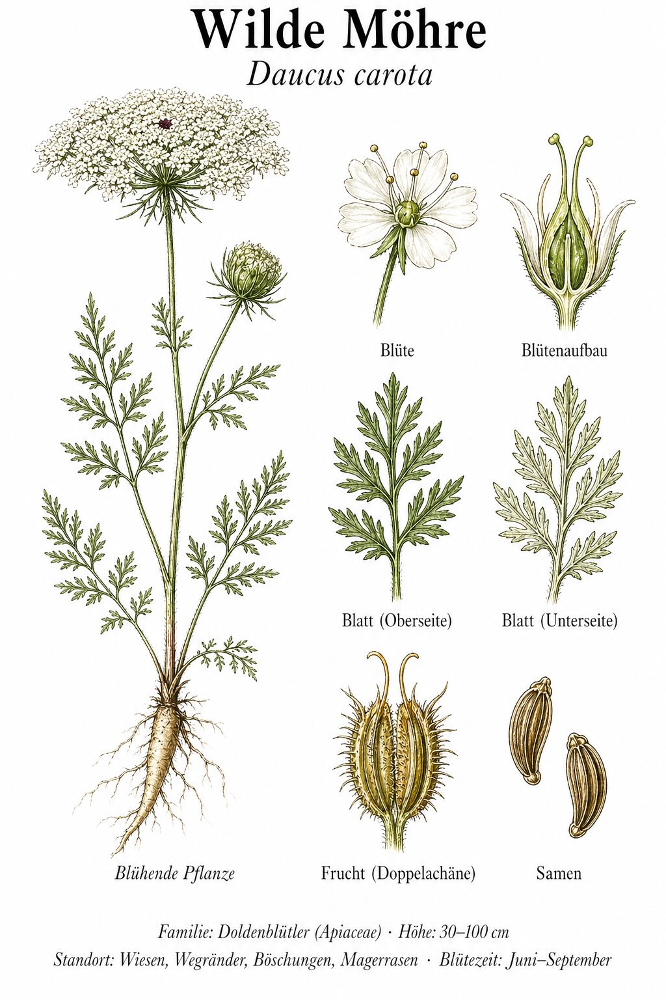
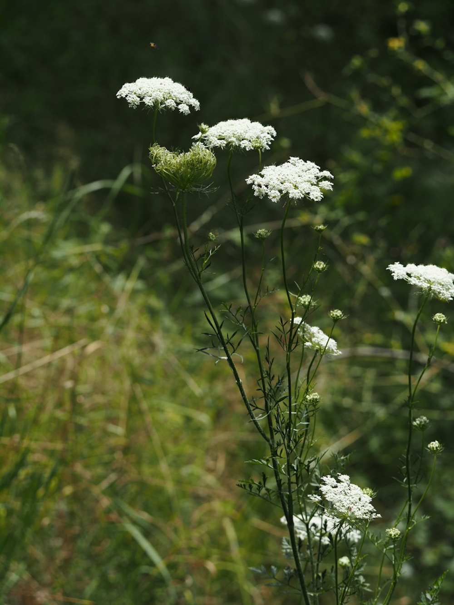
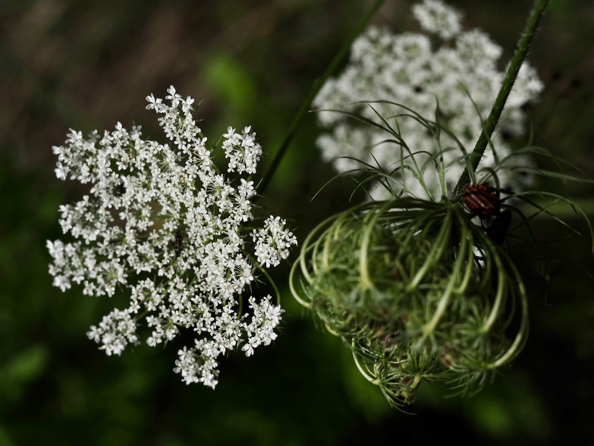

Die Karotte der Großmutter
Die Wilde Möhre ist die Mutter aller heutigen Karotten. Vor etwa 1.000 Jahren begannen Bauern, Pflanzen mit besonders dicker, süßer Wurzel auszuwählen — und nach Jahrhunderten Auslese entstanden die orangefarbenen Karotten von heute. Die Wurzel der Wildform ist dünn, weiß und holzig — riecht aber ganz unverwechselbar nach Karotte. Probier mal eine kurz zu zerreiben.
Die schwarze Perle in der Mitte
Schau mal genau hin: Mitten in einer aufgeblühten Doldenblüte sitzt fast immer eine winzige schwarze „Perle“ — eigentlich eine sterile, dunkelpurpurne Einzelblüte. Niemand weiß genau, wozu sie gut ist. Eine Theorie: Sie soll wie ein Insekt aussehen, das gerade gelandet ist, und so weitere Insekten anlocken. Die Natur hat ihre eigene Werbestrategie.